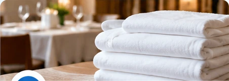

大量洗衣服
適合商家與機構的固定或大量洗滌需求，依實際布品條件確認處理方式。
以固定、大量與商用布品洗滌需求為主，先依實際品項、數量、材質、地區與洗滌頻率確認。
適合商家與機構的固定或大量洗滌需求，依實際布品條件確認處理方式。
毛巾、床巾、衣物與其他可洗滌布品，可先提供材質、數量與頻率詢問。

依布品材質與實際需求判斷適合的烘乾方式，不以單一條件套用所有布品。
如果正在找商用洗衣、毛巾送洗、床巾清洗或固定布品洗滌，先提供所在地區、布品種類、每次約略數量與洗滌頻率。診所、醫美、長照、髮廊、SPA、復健等需求可再進入對應服務頁查看準備方式。
高雄地區可先查看高雄商用洗衣完整說明，依毛巾、床巾與機構布品需求評估。
台南地區可查看台南商用洗衣與毛巾送洗說明，再依所在區域、布品品項、數量與頻率確認固定安排。
先看衣物洗標，再依污漬種類選擇處理方式。這份去漬步驟表附有資料來源，適用於一般可水洗衣物。
目前主要服務高雄市與台南市。
以長照護家、護理之家等固定大量布品需求為優先，也服務其他商家與機構。
品項、數量、所在地區與多久洗一次。
只要有穩定、反覆、大量使用毛巾、床巾、衣物或其他可洗滌布品，都可以先詢問。
住民衣物、毛巾、床單床巾、被套與寢具等固定大量送洗，可依品項、數量與週期評估收送。
查看護家／護理之家洗衣 →了解適合送洗的布品、需求評估方式與詢問前應準備的資訊。
查看高雄商用洗衣指南 →台南毛巾送洗、床巾與機構布品固定洗滌需求。
查看台南商用洗衣指南 →毛巾、床巾及其他可洗滌布品，可依使用量與週期詢問。
查看診所布品清洗 →美容毛巾、床巾與療程相關布品，可先提供數量與頻率。
查看醫美毛巾清洗 →高周轉毛巾是常見需求，可依每日或每週使用量詢問。
查看髮廊毛巾清洗 →美容毛巾、床巾及療程布品可依材質與數量確認。
查看 SPA 布品清洗 →治療床布品、毛巾與其他可洗滌用品可先詢問。
查看復健布品清洗 →依實際布品種類、數量與洗滌需求進一步確認。
查看診所布品清洗 →不在上述產業也沒關係，只要是可洗滌布品即可先說明需求。
以下直接回答洗毛巾、洗衣服、床單床巾送洗時最常遇到的問題。
不用知道「商用洗衣」這個名稱，直接照你平常會問的方式找就可以。
髮廊、SPA、醫美、診所等大量毛巾，可依每天或每週使用量詢問固定送洗。
可以先把毛巾、床單、床巾與衣服分項整理數量，再提供材質與使用情況詢問。
意嘉行主要處理店家與機構固定、大量洗衣需求；請提供所在地區、洗什麼、數量及多久洗一次。
先看處理時間、收送方式、服務時間和地址；若有特殊布品或大量需求，可先透過 LINE 確認。
交件迅速；實際完成時間依品項、數量與當次安排確認，可先透過 LINE 詢問。
意嘉行在高雄市、台南市有提供到府收送；實際可服務區域、布品種類、數量與洗滌頻率，請先詢問確認。
服務時間為 08:00–18:00。地址：高雄市三民區鼎金後路13號；出發前可先以 LINE 確認營業日。
把送洗前最常問的問題直接說清楚，方便店家與機構快速確認。
目前提供商用洗衣、毛巾與布品清洗、烘乾相關服務；其他可洗滌布品也可先詢問。
可以先詢問。請提供毛巾、床巾或其他布品的種類、約略數量、所在地區與多久洗一次。
目前主要服務範圍為高雄市與台南市。
可以先提供每次約略數量、洗滌頻率與所在地區，由意嘉行確認是否適合安排。
不一定。不同材質可能需要不同條件，會依實際布品需求判斷。
交件迅速；實際完成時間依品項、數量與當次安排確認，可先透過 LINE 詢問。
意嘉行在高雄市、台南市有提供到府收送；實際可服務區域、布品種類、數量與洗滌頻率，請先詢問確認。
地址是高雄市三民區鼎金後路13號，服務時間為 08:00–18:00；營業日請出發前先透過 LINE 確認。
意嘉行是服務高雄市與台南市的商用洗衣業者，提供毛巾、床巾、衣物及其他可洗滌布品的清洗與烘乾服務。
聯絡方式：LINE ID：gov1977
詢問時直接提供四項資訊：洗什麼、多少、在哪裡、多久洗一次。
LINE 詢問店裡毛巾每天一大堆、衣服洗不完、床單床巾需要固定清洗，都可以直接詢問意嘉行。高雄市、台南市有提供到府收送，可處理固定或大量的毛巾、浴巾、衣服、床單、床巾等洗衣需求；實際區域依路線確認。
高雄需要洗毛巾、浴巾、衣服、床單或床巾，可提供所在區域、數量與多久洗一次，確認到府收送安排。查看高雄洗衣收送。
台南店家有大量毛巾、衣服、床單床巾要洗，也可詢問到府收送；先提供台南所在區域、品項、數量與頻率。查看台南洗衣收送。
診所、醫美、長照、髮廊、洗髮店、SPA、復健，以及其他每天或每週會累積大量毛巾、衣服、床單床巾的店家與機構，都可以詢問固定清洗與收送。